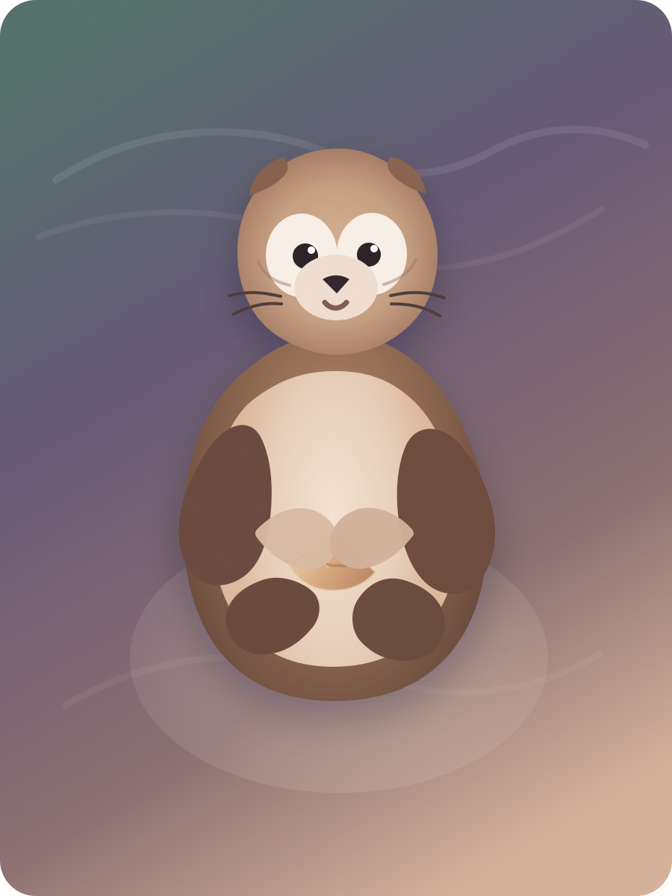
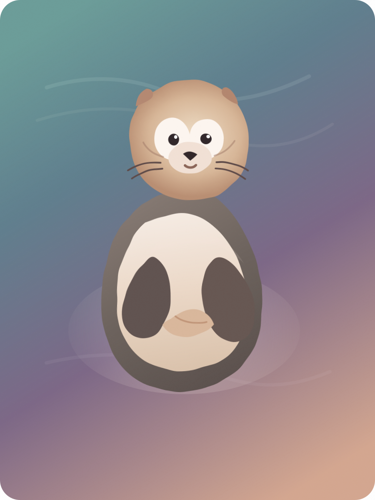
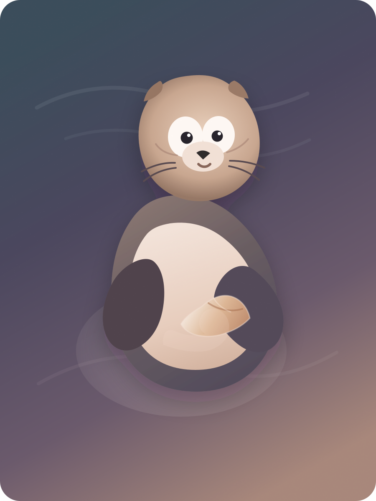

01. Storybook Plush
Warmest and most reassuring. Best if you want the otter to feel like a quiet illustrated character from a healing picture book.
- Softest emotional read
- Most cuddly silhouette
- Feels intimate and safe
These are illustration-first concept directions for the core companion character. They are intentionally more organic and less geometric than the current in-app otter, with softer expressions, gentler silhouette variation, and more emotional presence.

Warmest and most reassuring. Best if you want the otter to feel like a quiet illustrated character from a healing picture book.

Airier and more painterly. Best if you want the otter to feel more dreamlike, reflective, and woven into the watery atmosphere.

Most dimensional and app-ready. Best if you want a stronger 2.5D presence while keeping the character calm and emotionally readable.